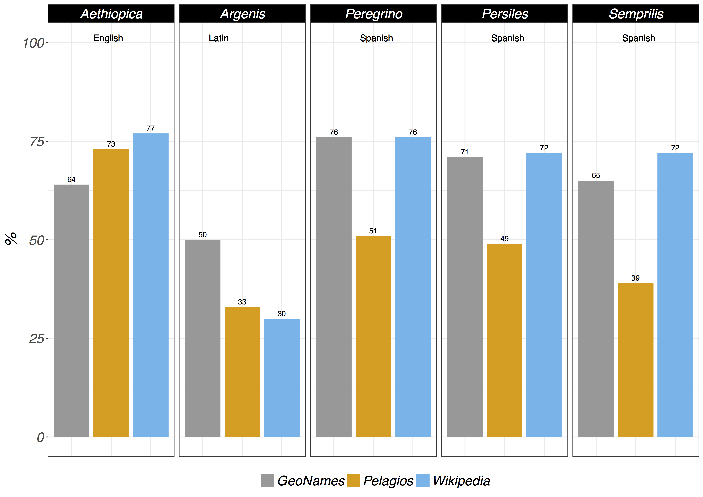

Digital mapping of fictional places in Spanish Early Modern Byzantine novels
Conference: Mapping the Text · New York University · 2018
Contents
- Title
- 1) Theoretical framework (3)
- 2) Literary mapping↡(4-7)
- 3) Methodological framework↡(8-13)
- 4) Quantitative map visualization↡(14-23)
- 5) Visualization of itineraries↡(24-29)
- 6) Final remarks (30)
- References
- Impressum
1) Theoretical framework

- spatial turn
- geographies of literary corpora
- fictional literary geography:
- basic quantitative analysis (places);
- vizualisation of places & itineraries.
2) Literary mapping
"the knowledge of GEOGRAPHY is, which, in that respect therefore is of ∫ome, and not without iu∫t cau∫e called The eye of Hi∫tory [...] the reading of Hi∫tories doeth both ∫eeme to be much more plea∫ant, and in deed ∫o it is, when the Mappe being layed before our eyes, we may behold things done, or places where they were done, as if they were at this time pre∫ent and in doing." (Ortelius, The theatre of the vvhole world, London, 1606: 4v)
“For the courtiers do not stir from their rooms or beyond the threshold of their court, but travel over the whole world merely by looking at a map, without a farthing's cost or suffering heat or cold, hunger, or thirst.” (Cervantes, Don Quixote, 1615, 2, VI)
Literary maps by cartographers

{kind=link}
Digital literary mapping
- · Mapping St Petersburg. Experiments in Literary Cartography (fictional)
- · Mapping Dante. A Study of Places in the Commedia (fictional)
- · Authorial London. The city in the lives and works of its Writers (corpus & fictional)
- · ToposText (historical & fictional)
- · Ein literarischer Atlas Europa (fictional)
- · Mapping Lake District Literature (historical & fictional)
- · NYWalker: geocoding the contents of novels (fictional)
- · Fabula and Sjužet in “Wandering Rocks” (fictional)
- creation of post-authorial maps (Bushell 2012: 152)
- analytical potentiality (+)
- as a critical component of a DSE (+)
- Chronotope: sea travels, pirates, exoticism.
- "Kartographisches Schreiben"Dünne 2011: 61-66
- Carta Marina (Persiles), Theatrum Orbis Terrarum (Semprilis).
- North-South axis vs. Mediterranean basin.
Byzantine literary genre in Spain (XVI-XVII)
(Historical cartography as narrative model)
3) Methodological framework
- Answers & new questions.
- Possibilities of digital mapping.
Corpus (proof of concept): 5 novels
Location extraction
- Stanford NER · version 3.8.0 · language models 2017/09/06 (Spanish, English)
- FreeLing · version 4.0 · performance with (old) Spanish (+)
- Apache OpenNLP · for the R package, models for 1.5 series · performance with Spanish (-)
Geolocation
Georeference and tiling of historical maps (QGIS)
Digital Mapping (Leaflet for R)
- JavaScript library for interactive maps.
- one environment for data & visualization.
- overlay historic maps.
- export capabilities (interactive html).
4) Map visualization
· in clusters
place cluster of five novels
coverage: cluster's bounds in «Persiles» (red)
coverage: cluster's bounds in «Aethiopica» (grey)
coverage: cluster's bounds in «Semprilis» (green)
· places by frequency
most frequent places
· places clustered by proximity
place density in «Semprilis» (heat map)
shared places between novels (grouped by number)
methodological issues 1/2
- Fiction in real places?
- One type of fictional place?
- Zones of narrative action?
remembered, dreamed places, digresions, diegesis, etc. (Piatti, 2008)
- Only place names as spatial feature?
"Recent applications of the ‘spatial turn’ in literary studies naively presuppose the mappability of literature, reducing fiction to ‘invented events in real places." (Stockhammer, 2013: 123)
historical, invented, indirect reference, mix of real and fictional, displaced, fantastic, explicitly imprecise, etc (Reuschel/Hurni, 2011)
technical issues 2/2
- Inaccurate NER (Bornet/Kaplan, 2017).
- Limits of automated geolocation by gazetteers.
- Place disambiguation (manual).
- Uncontrolled clustering method.
Gazetteers automated returns
5) Visualization of itineraries
Itinerary and stops of the lovers (Semprilis and Genorodano).
literarische Kartizität
"Affinität oder Distanz zu kartographischen Darstellungsverfahren" (Stockhamer, 2007: 68)
(affinity or distance to cartographic visualization techniques)
Historical map overlay (digitized and georeferenced)
Inset: "Congi Regni Christiani, in Africa, nova descriptio."
overlay: Polish-Lithuanian Commonwealth (circa 1619)
6) Final remarks
- "GIS killing cartography" (Crampton, 2010: 22)
- Literary Neogeography. (Turner, 2006; Richterich, 2011)
- Critic to Moretti's maps (graphs vs. maps). (Moretti, 2007)
- (Un)mappability of literature. (Stockhammer, 2007)
references
- C. Bornet, F. Kaplan. 2017. “A Simple Set of Rules for Characters and Place Recognition in French Novels”, Frontiers in Digital Humanities, 4, March.
- S. Bushell. 2012. “The Slipperiness of Literary Maps: Critical Cartography and Literary Cartography”. Cartographica: The International Journal for Geographic Information and Geovisualization, 47, 3, 149-60.
- J. W. Crampton. 2010. Mapping. A Critical Introduction to Cartography and GIS. Wiley-Blackwell.
- J. Dünne. 2011. Die kartographische Imagination: Erinnern, Erzählen und Fingieren in der Frühen Neuzeit, München, Fink.
- F. Moretti. 2007. Graphs, Maps and Trees. Abstract Models for Literary History. 2.ª ed. London, New York. Verso.
- B. Piatti. 2008. Die Geographie der Literatur. Schauplätze, Handlungsräume, Raumphantasien. Göttingen, Wallstein-Verlag.
- A.K. Reuschel, L. Hurni. 2011. “Mapping Literature: Visualisation of Spatial Uncertainty in Fiction”. The Cartographic Journal. Cartographies of Fictional Worlds, 48, 4, 293-308.
- R. Stockhammer. 2007. Kartierung der Erde: Macht und Lust in Karten und Literatur. München, Fink.
- R. Stockhammer. 2013. “Exokeanismós: the (un)mappability of literature”, Primerjalna Knjizevnost, 36, 2, 123-138.